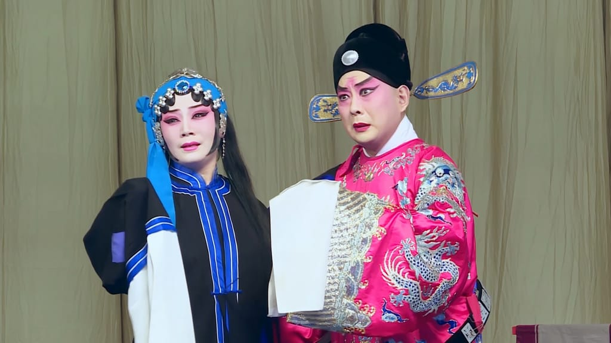
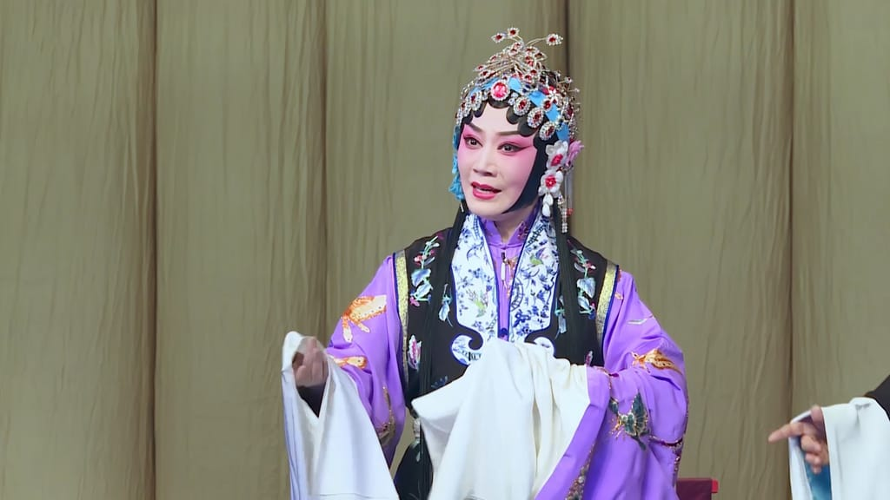
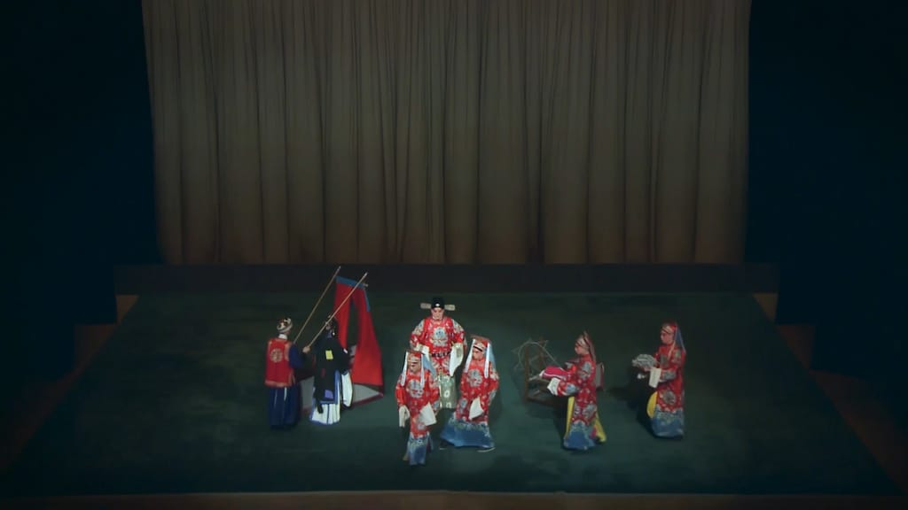

中国的戏曲文化源远流长，在数千年的历史进程中，中国传统戏曲曾是最接地气的一种文艺形式，有着深厚的群众基础。千年来就是依靠剧本、档案、庙台、戏楼、照片、唱片、视频等形形色色的物质形态走进人们的心灵，保存于人们的记忆，不断地将崭新的未来吸纳为历史的组成部分。除了戏曲艺术本身所应具备的品质外，良好的媒介推广也在其发展中具有非常重要的作用，如今大众传媒的时代已经不是“酒香不怕巷子深”的年代，任何形式的文化和各种独特的思想要走出去，被别人了解和接受，都必须要运用先进的传播渠道促进和外界的沟通，提高传播和理解的有效性。戏曲艺术想要走入人们的生活，走进更多文艺爱好者的视野，特别是要吸引成长在新媒体占据大量文化市场背景下的年轻人的注意，就必须要加大在新媒体传播上的探索研究。我国正在实行文化走出去的战略，这对于我国的戏曲艺术怎样在互联网文化和新媒体教育中寻得立足之地，具有很大的启发意义。戏曲文化一直都在主动地寻求或接受新时代的新载体以寄托自身的精粹。
最初影视与戏曲的结合，只是把影视当作一个平台去播放戏曲，用镜头记录舞台上的戏曲表演，使之成为“戏曲影视作品”（此时还未形成电影独特的镜头语言，只是起到记录传播的作用，故不能称之为真正意义上的电影）。就如我国第一部戏曲电影《定军山》，“只是发挥了记录名伶舞台化动作的功能。”到了20世纪初，京剧表演艺术家梅兰芳在《黛玉葬花》等戏曲电影中的演出，虽然还是以戏曲动作为主，但是运用了很多电影的镜头语言，这已经是电影的雏形。如今，我们在很多电影中都能看到戏曲的影子。比如电影《大武生》《梅兰芳》《霸王别姬》《赵氏孤儿》等。戏曲已经是影视中的一个主流元素，观众在欣赏一部影视作品的同时，对于其中的戏曲也关注起来，这为戏曲提供了一个新的平台。历史证明，戏曲与影视的结合，对现代社会和中国传统文化的发展是有益的，二者相互促进、共同提高。《生死恨》初稿是齐如山先生根据明代董应翰《易鞋记》改编的。9.18事变后梅兰芳先生移居上海，于1935年冬再度改编《易鞋记》，由许姬传、李释戡执笔写词，由徐兰沅、王少卿负责设计唱腔，梅兰芳先生亲自修正审定，剧名改为《生死恨》。改本按照梅兰芳先生的思路，梅先生明确地指出：“编演这个戏的目的，意在描写俘虏的惨痛遭遇，激发斗志。要摆脱大团圆旧套路，改为悲剧结尾。”. 1948 年6月，由华业电影公司筹备，将原有的京剧本《生死恨》改成电影脚本，并由费穆担任电影导演，拍成了中国有史以来的第一部彩色有声戏曲片。将平面的写意性的京剧表演方式变成立体的现实性的电影表演。将新媒体平台与戏曲文化艺术的传播相结合，不仅是对新媒体传播内容、传播形式的丰富，还是不同地域、不同剧种之间高效率、快速度进行沟通交流的新尝试。并且给大众了解戏剧这一高深、复杂的艺术门类提供了一个线上线下交流的新平台。新媒体平台与戏曲相结合，可以推动文化产业的发展。

越来越多的app软件可以借助手机新媒体平台实现与目标对象的互动交流。戏曲教学的传播与新媒体相结合，不仅是将自己成功的推销到每个潜在受众的面前，同时也给受众提供了接近戏曲文化，了解戏曲艺术的双向互动机会。在与张晶教授前期沟通中，慢慢摸索出来一个创意：戏曲教学传统模式是口传心授，那么如何与现代新模式教学契合，又不显得突兀？设想是争取让学生从多个不同视角，全方位立体的进行教学演示再现，同时兼顾各个相关专业学生的学习，最后达到各取所需，寓教于乐的教学模式。
新媒体数字网络有其独特的表达方式，如录像、数字化处理、图像资源移借和拼接、后期的造型和展示功能等。新媒体艺术是以像的形态呈现在我们眼前的，既有动态的也有静态的，将艺术变为了“流动的”“互动性”和“创新性”表现。移动互联传播戏曲可以把戏曲保存于云端的资料库中，这种便捷的方式促进了对戏曲的保护，也更加有利于交流、分享、学习。这对于培养戏曲传承人也有极大的便利。相比于传统的广播电视媒介传播戏曲，利用网络来普及和学习戏曲，有着得天独厚的优势。这其中对学生最有诱惑力的就是有了自主权，可以自主学习欣赏喜爱的剧目。同时数字网络让戏曲片段与观众进行互动，例如多机位多角度演示同一动作，学生可以得到老师示范时最准确的反馈，观众还可以进行针对性的进行交流。在这个创意设计之初，所有参与者都群情激昂，兴奋地畅想着未来的艺术呈现之美，但拍摄中很多实际问题接踵而至，例如拍摄之中，剧场条件所限、本应在摄影棚搭景进行拍摄的，由于经费所限等诸多问题，只能改在剧场呈现，那么像场景虚实结合问题、景片道具问题、灯光问题都无法用影视的标准来要求了，只能尽最大可能适应场地局限性。还有就是教师装扮等情况，因为是分场拍摄，难免在衣着上、妆容上有差异，遇到这样的问题，我们坚决不凑合，必须重新拍摄，就是为了能把最好的创意尽可能地展示出来，少留遗憾。像在后期制作中遇到的问题也很多，像素材的大小问题就很棘手，因为要网络传播，既要清晰美观，还要不能太占空间，我们这个项目组的人员真是煞费苦心，一遍一遍的测试和生成，在经过几十遍测试之后，终于找到了满意的方案。之所以举这些例子，并不是想抱怨，而是真的觉得这些都是戏曲的改革，学生与观众有了网络这个平台，能够足不出户进行交流和学习，这对于传统戏曲的发展是有益的。网络的普及，缩短了时空距离，改变了“你播我看、你放我听”的单向传播模式，给老师以灵活的表演空间，给学生以更大的选择余地，给评论家和学者以更多的研究资料，从而为戏曲艺术带来新的发展机遇。包括VR（虚拟现实）技术的运用，使观众能够以全新视角，近距离观看演员在台上的表演，从中得到极大的学习帮助。接下来我们也会继续拓展，在VR视角方面进行研究，利用新技术作为支撑，将原汁原味的戏曲教学所有的精彩瞬间进行呈现，力求尽善尽美地展示。
戏曲艺术作为我国丰富文化的组成部分，在世界文化与艺术史上都有着重要的地位。戏曲文化通过什么样的表现方式才能够满足越来越多的观众的审美要求，植根于年轻受众中，也对戏曲的转型提出了更高的要求，戏剧的艺术的继承和发展，离不开青年一代的努力学习和探索研究，只有精准定位受众群体的审美诉求，有针对性、科学合理的对年轻一代普及我国优秀的传统文化知识，培养高尚的艺术欣赏追求，才能给戏剧注入新的生命力，推进戏剧的走向更大的世界舞台。积极使用新媒体宣传，敢于创新艺术生产活动与营销模式对增强戏剧在市场竞争中的优势地位，促进我国传统文化艺术瑰宝的不断传承发展、丰富与繁荣都有着很重要的意义。
[1]高小健.中国戏曲电影史[M].北京：文化艺术出版社，2005,16.
[2]孙力平.重现与转换当代文化建设中的古代文学[M].杭州：浙江大学出版社，2013,45.
[3]魏欣.媒体技术影像[J].装饰，2006,(7):128.
[4]李丽.当代中国戏曲生存状态与出路之探析[J].长江大学学报(社科版)，2008,(4):179.作者:鲁妍 单位:香港理工大学